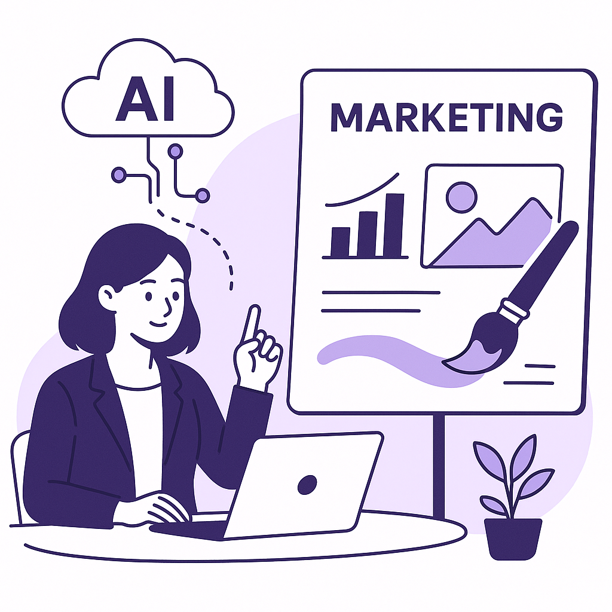
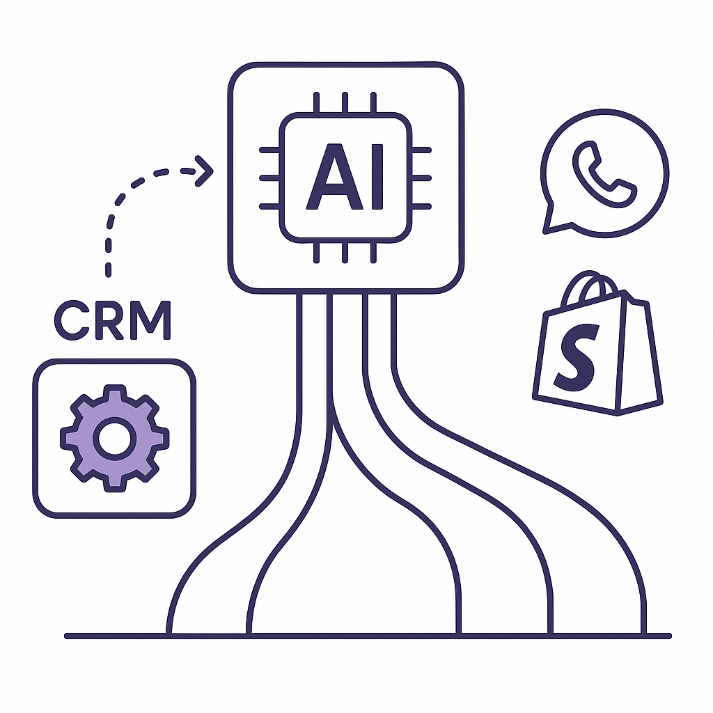
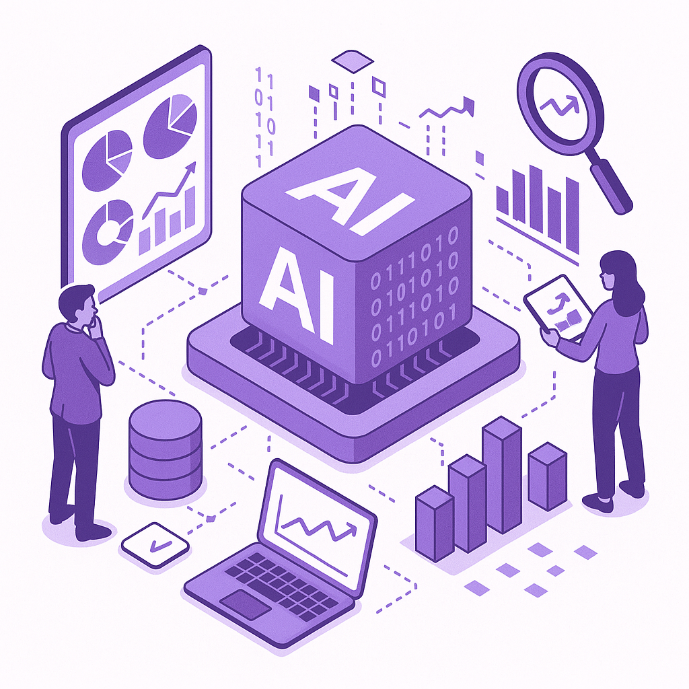
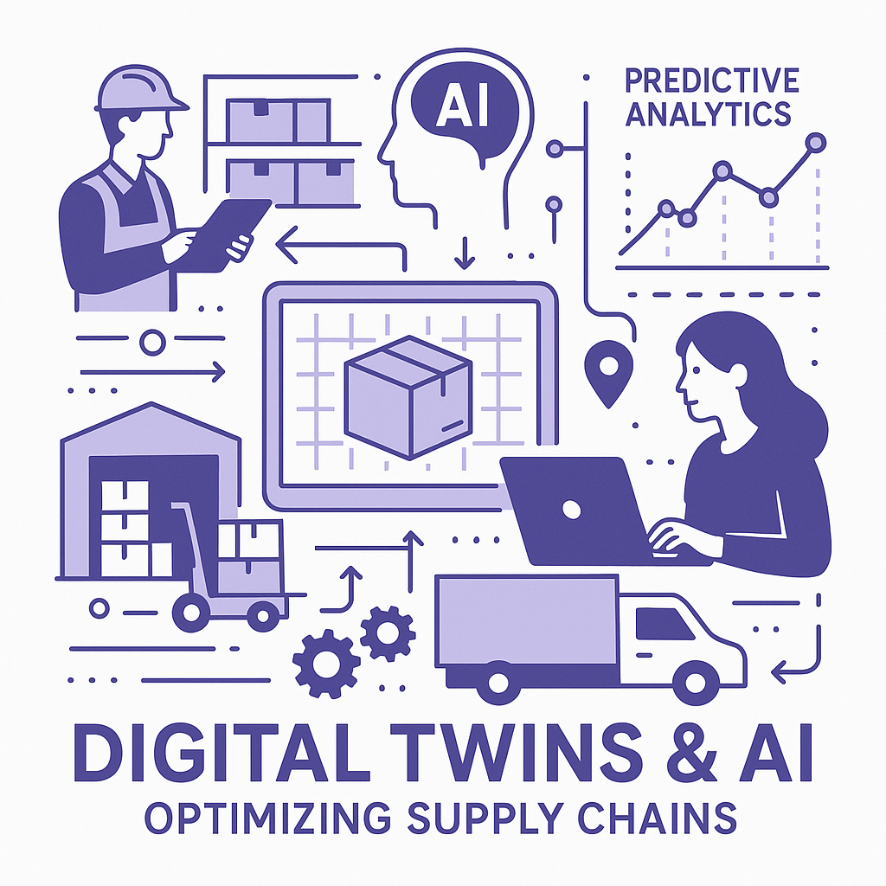
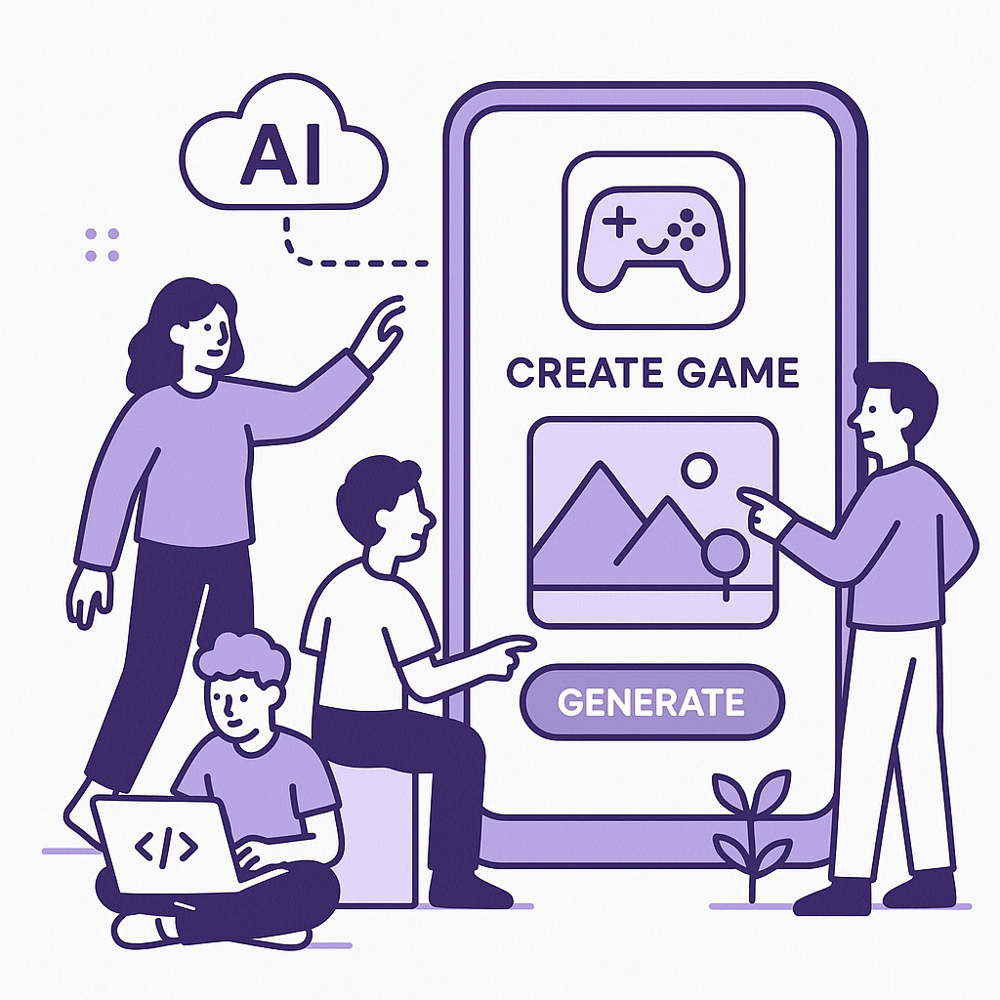

Publishing Recommendation
reviseSome posts lack clarity and focus, particularly in connecting how AI trends directly influence retention marketing. The posts should be more concise and align tightly with Purands AI's practical brand voice.
Today's drafts explore relevant AI trends but often stray into generalities or hype. They need tighter alignment with Purands AI's practical and evidence-based voice. Specifically, posts should focus on actionable insights and avoid overstatements about AI's potential. Clarifying how these trends concretely impact retention marketing will enhance credibility and value for the audience.
LinkedIn Posts (10)
1. How Dollar Shave Club uses generative AI to unlock advertising creativity ★ Purands solution · high priority
CTA: How do you see generative AI changing marketing in your industry?

⬇ Download image{kind=link}
Image prompt · isometric-flat
Caption: Generative AI meets marketing creativity.
Alternative hooks
- Generative AI is more than just a buzzword; it's reshaping marketing strategies.
- What happens when AI meets creativity? Ask Dollar Shave Club.
- Think AI can't be creative? Dollar Shave Club would disagree.
Research behind this post (sources, summaries & confidence)
How Dollar Shave Club uses generative AI to unlock advertising creativity conf 0.80 · AI in Business
Utilizing generative AI for creative advertising can enhance customer engagement and retention. This case study from Dollar Shave Club provides insights into how brands can leverage AI to innovate their marketing strategies.
Sources & what I took from each
- Dollar Shave Club uses generative AI for creative advertising.: Reported by Retail Dive, Dollar Shave Club leverages generative AI to enhance creativity in its advertising efforts. ↗ read source
Examples
- Generative AI has helped Dollar Shave Club create more engaging and personalized ad content, boosting customer interaction.
Original trend links
Risks / caveats
- Potential over-dependence on AI could stifle human creativity.
- Ethical concerns over AI-generated content authenticity.
2. AI Agent Security in Retention Marketing ★ Purands solution · high priority
CTA: How do you approach AI security in your organization?
Caption: AI agent security incidents: A growing concern.
Alternative hooks
- 54% of enterprises have faced AI agent security incidents. Are you prepared?
- AI security breaches are more common than you think. Here's how to stay safe.
- Customer data security is non-negotiable. Here's our approach with AI retention agents.
Research behind this post (sources, summaries & confidence)
The agent security gap: 54% of enterprises have already had an AI agent incident, and most still let agents share credentials conf 0.70 · AI in Business
Security concerns around AI agents are critical as companies increasingly rely on them for tasks including retention marketing. Addressing these security gaps is essential to protect customer data and maintain trust, especially in regions like APAC where data privacy regulations are stringent.
Sources & what I took from each
- 54% of enterprises have experienced an AI agent security incident.: The report by VentureBeat highlights a significant percentage of enterprises facing security incidents related to AI agents. ↗ read source
Statistics
- 54% of enterprises have had an AI agent-related security incident.
Original trend links
Risks / caveats
- Security breaches can lead to significant financial and reputational damage.
- Regulatory non-compliance could result in fines and legal challenges.
3. The AI compute gap: Enterprises are buying infrastructure faster than they can measure what it costs ★ Purands solution · high priority
CTA: How are you managing AI costs and measuring ROI in your organization?

⬇ Download image{kind=link}
Image prompt · isometric-flat
Caption: AI without the infrastructure burden.
Alternative hooks
- Enterprises are spending on AI faster than they can measure the costs.
- The rush to AI infrastructure comes with a hidden cost: unknown ROI.
- Many companies face an AI compute gap, investing without measuring impact.
Research behind this post (sources, summaries & confidence)
The AI compute gap: Enterprises are buying infrastructure faster than they can measure what it costs conf 0.70 · AI in Business
The rapid investment in AI infrastructure without clear economic measurement can affect cost management and ROI, crucial for retention marketing platforms which depend on cost-effective AI solutions.
Sources & what I took from each
- Enterprises are facing challenges in measuring the costs of AI infrastructure.: VentureBeat discusses the gap between AI infrastructure investment and the ability to measure its economic impact. ↗ read source
Original trend links
Risks / caveats
- Inability to measure ROI could lead to unsustainable spending and financial strain.
- Misalignment between investment and returns may lead to reduced competitiveness.
4. AI-native Cloud Infrastructure ★ Purands solution · high priority
CTA: How do you see AI-native infrastructure reshaping your industry?
Alternative hooks
- Railway's $100 million move is a wake-up call for cloud giants.
- Is AI-native cloud infrastructure the next big wave?
- How does Railway's funding shake up the cloud service landscape?
Research behind this post (sources, summaries & confidence)
Railway secures $100 million to challenge AWS with AI-native cloud infrastructure conf 0.70 · AI Startups
Railway's funding round indicates growing interest in AI-native infrastructure, which could impact cloud services in APAC. This development is relevant for SaaS providers and retention marketing platforms seeking scalable and cost-effective AI solutions.
Sources & what I took from each
- Railway raised $100 million to develop AI-native cloud infrastructure.: VentureBeat reports on Railway's significant funding round aimed at developing cloud infrastructure to compete with established players like AWS. ↗ read source
Statistics
- $100 million secured by Railway for AI-native cloud infrastructure.
Original trend links
Risks / caveats
- New market entrants face significant challenges in competing with established giants like AWS.
- High capital and operational costs associated with developing competitive cloud infrastructure.
5. Google just redesigned the search box for the first time in 25 years ★ Purands solution · high priority
CTA: How has Google's search redesign impacted your brand's visibility?
Alternative hooks
- Google's search box redesign is more than a cosmetic change.
- How does a new search box impact your customer retention?
- Google's search box overhaul: an opportunity for smarter retention.
Research behind this post (sources, summaries & confidence)
Google just redesigned the search box for the first time in 25 years conf 0.60 · AI in Business
Changes in Google's search interface can impact how consumers find products and information. This is significant for retention marketers who rely on search visibility for customer acquisition and retention.
Sources & what I took from each
- Google redesigned its search box.: VentureBeat reports the first major redesign of Google's search box, which could impact user interaction and search patterns. ↗ read source
Original trend links
Risks / caveats
- Changes to search interfaces may disrupt user habits, potentially reducing visibility for some brands.
- The impact on SEO strategies could be significant if the redesign changes how search results are prioritized.
6. The agent evaluation gap: Enterprise AI organizations have a reality-alignment problem ★ Purands solution · high priority
CTA: How do you ensure your AI systems meet real-world customer expectations?
Alternative hooks
- AI agents often miss the mark on real-world alignment.
- Customer retention suffers when AI isn't aligned with reality.
- Misaligned AI agents can cost more than just money.
Research behind this post (sources, summaries & confidence)
The agent evaluation gap: Enterprise AI organizations have a reality-alignment problem conf 0.60 · AI in Business
As enterprises deploy AI agents, ensuring these agents align with real-world expectations is crucial. This can affect customer interactions and satisfaction, impacting retention strategies.
Sources & what I took from each
- AI agents often misalign with real-world applications.: VentureBeat discusses the issue of AI agents being deployed without adequate alignment with practical applications. ↗ read source
Original trend links
Risks / caveats
- Misaligned AI agents can degrade user experience and lead to customer dissatisfaction.
- Potential increased costs due to necessary re-alignments and adjustments.
7. Moonshot AI Releases Kimi K3: A 2.8 Trillion Parameter Open MoE Model ★ Purands solution · high priority
CTA: How do you see large AI models shaping the future of retention marketing?

⬇ Download image{kind=link}
Image prompt · isometric-flat
Caption: Large models, deeper insights.
Alternative hooks
- Moonshot AI's new Kimi K3 model marks a leap in data analysis.
- 2.8 trillion parameters just changed the AI landscape. Here's how.
- The Kimi K3 model is here. What does it mean for retention marketing?
Research behind this post (sources, summaries & confidence)
Moonshot AI Releases Kimi K3: A 2.8 Trillion Parameter Open MoE Model conf 0.60 · AI Startups
The release of large AI models by startups like Moonshot AI signifies the competitive landscape in AI development, particularly in regions like APAC. These advancements could influence retention marketing strategies through enhanced data analysis and personalization.
Sources & what I took from each
- Moonshot AI released a 2.8 trillion parameter model.: MarkTechPost covers the release of Moonshot AI's Kimi K3 model, highlighting its potential impact on AI capabilities. ↗ read source
Original trend links
Risks / caveats
- Large models require substantial computational resources, potentially increasing costs.
- Complex models may introduce challenges in interpretability and ethical use.
8. Walmart bets on AI and digital twins to shape its supply chain strategy
CTA: How do you see AI changing supply chains in other industries?

⬇ Download image{kind=link}
Image prompt · isometric-flat
Caption: Digital twins optimize supply chains.
Alternative hooks
- Walmart's supply chain is getting a digital makeover.
- AI and digital twins are Walmart's new secret weapons.
- How Walmart is using AI to keep shelves stocked.
Research behind this post (sources, summaries & confidence)
Walmart bets on AI and digital twins to shape its supply chain strategy conf 0.80 · AI in Business
Walmart's use of AI and digital twins in supply chain strategy highlights how AI can drive operational efficiency and competitiveness in retail. This approach is especially relevant for retention marketing as it can improve inventory management, customer satisfaction, and loyalty through better product availability.
Sources & what I took from each
- Walmart uses AI and digital twins for supply chain optimization.: Walmart has been reported to use digital twins and AI to simulate and optimize its supply chain processes, enhancing efficiency and responsiveness. ↗ read source
Examples
- Walmart has implemented AI models to predict consumer demand and optimize inventory levels, reducing waste and improving availability.
Original trend links
Risks / caveats
- Over-reliance on AI models could lead to issues if the models are not accurately reflecting real-world conditions.
- Data privacy concerns with the extensive use of customer data for AI optimization.
9. Netflix says around 300 titles used generative AI
CTA: How do you see AI balancing with creativity in your industry?
Alternative hooks
- Netflix has used generative AI in about 300 titles.
- Ever wondered how Netflix manages its vast content library?
- Generative AI is quietly transforming Netflix's content production.
Research behind this post (sources, summaries & confidence)
Netflix says around 300 titles used generative AI conf 0.80 · AI in Business
Netflix's use of generative AI in content production highlights the increasing role of AI in creative industries. This trend is relevant for retention marketing strategies that leverage content personalization to enhance viewer engagement and retention.
Sources & what I took from each
- Netflix used generative AI in approximately 300 titles.: Reported by The Verge, Netflix's use of generative AI in numerous titles showcases AI's role in content creation. ↗ read source
Statistics
- Approximately 300 Netflix titles utilized generative AI.
Original trend links
Risks / caveats
- Over-reliance on AI may lead to homogenization of content.
- Potential backlash from creatives concerned about AI replacing human jobs.
10. AI in Business
CTA: How do you see AI affecting user-generated content in digital platforms?

⬇ Download image{kind=link}
Image prompt · isometric-flat
Caption: AI boosts user-generated content.
Alternative hooks
- Roblox is making game creation easier with AI. Here's why it matters.
- What happens when AI and user-generated content converge on Roblox?
- Roblox's new AI feature is changing the game for creators.
Research behind this post (sources, summaries & confidence)
Roblox launches an AI-powered game-creation feature in its mobile app conf 0.70 · AI in Business
The introduction of AI in game development democratizes content creation and has implications for user engagement and retention in digital platforms. This is relevant for brands targeting younger demographics in the APAC region.
Sources & what I took from each
- Roblox introduced an AI-powered game creation tool.: TechCrunch reports on Roblox's new AI feature that allows users to create games more easily, enhancing user engagement. ↗ read source
Original trend links
Risks / caveats
- AI-driven content creation could lead to quality control issues.
- Potential for increased moderation challenges with user-generated content.
Today's Trends
| # | Trend | Category | Why it matters |
|---|---|---|---|
| 1 | Walmart bets on AI and digital twins to shape its supply chain strategy
source |
AI in Business | Walmart's use of AI and digital twins in supply chain strategy highlights how AI can drive operational efficiency and competitiveness in retail. This approach is especially relevant for retention marketing as it can improve inventory management, customer satisfaction, and loyalty through better product availability. |
| 2 | The agent security gap: 54% of enterprises have already had an AI agent incident, and most still let agents share credentials
source |
AI in Business | Security concerns around AI agents are critical as companies increasingly rely on them for tasks including retention marketing. Addressing these security gaps is essential to protect customer data and maintain trust, especially in regions like APAC where data privacy regulations are stringent. |
| 3 | Google just redesigned the search box for the first time in 25 years
source |
AI in Business | Changes in Google's search interface can impact how consumers find products and information. This is significant for retention marketers who rely on search visibility for customer acquisition and retention. |
| 4 | The AI compute gap: Enterprises are buying infrastructure faster than they can measure what it costs
source |
AI in Business | The rapid investment in AI infrastructure without clear economic measurement can affect cost management and ROI, crucial for retention marketing platforms which depend on cost-effective AI solutions. |
| 5 | Netflix says around 300 titles used generative AI
source |
AI in Business | Netflix's use of generative AI in content production highlights the increasing role of AI in creative industries. This trend is relevant for retention marketing strategies that leverage content personalization to enhance viewer engagement and retention. |
| 6 | Roblox launches an AI-powered game-creation feature in its mobile app
source |
AI in Business | The introduction of AI in game development democratizes content creation and has implications for user engagement and retention in digital platforms. This is relevant for brands targeting younger demographics in the APAC region. |
| 7 | The agent evaluation gap: Enterprise AI organizations have a reality-alignment problem
source |
AI in Business | As enterprises deploy AI agents, ensuring these agents align with real-world expectations is crucial. This can affect customer interactions and satisfaction, impacting retention strategies. |
| 8 | OpenAI Details GPT-Red: An Internal Automated Red-Teaming Model
source |
AI in Business | Security in AI systems is paramount, especially as these systems become integral to customer data platforms and marketing operations. OpenAI's GPT-Red demonstrates advancements in making AI more resilient to threats. |
| 9 | AWS and Bluesight build AI for hospital 340B compliance
source |
AI in Business | AI applications in compliance management are increasingly important as regulations tighten globally, including in APAC. This trend is significant for retention marketing as it aligns with data privacy and regulatory compliance. |
| 10 | Samsung’s 55-inch Frame art TV is $200 cheaper than usual
source |
AI in Business | While not directly related to retention marketing, Samsung's pricing strategy for its AI-driven art TV could influence consumer electronics purchasing trends, indirectly affecting customer retention in tech and home entertainment sectors. |
| 11 | Moonshot AI Releases Kimi K3: A 2.8 Trillion Parameter Open MoE Model
source |
AI Startups | The release of large AI models by startups like Moonshot AI signifies the competitive landscape in AI development, particularly in regions like APAC. These advancements could influence retention marketing strategies through enhanced data analysis and personalization. |
| 12 | Railway secures $100 million to challenge AWS with AI-native cloud infrastructure
source |
AI Startups | Railway's funding round indicates growing interest in AI-native infrastructure, which could impact cloud services in APAC. This development is relevant for SaaS providers and retention marketing platforms seeking scalable and cost-effective AI solutions. |
| 13 | How Dollar Shave Club uses generative AI to unlock advertising creativity
source |
AI in Business | Utilizing generative AI for creative advertising can enhance customer engagement and retention. This case study from Dollar Shave Club provides insights into how brands can leverage AI to innovate their marketing strategies. |
| 14 | Nokia’s AI-RAN platform: a radio comeback that runs on NVIDIA
source |
AI in Business | Nokia's AI-RAN platform represents a fusion of AI with telecommunications infrastructure, which can drive advancements in connectivity and data transmission. This is pertinent for APAC markets where mobile-first strategies are prevalent. |
Risk Assessment
- Potential over-promising on AI capabilities in posts about Dollar Shave Club and Netflix.
- The post on 'AI-native Cloud Infrastructure' could be seen as speculative without concrete examples of benefits.
- Risk of sounding AI-generated in several posts due to vague statements and a lack of concrete examples.
Suggested LinkedIn Comments (30)
Open each post, then paste the copied comment. Nothing is posted automatically.
1. insight · Subhadip Chatterjee — The AI race has shifted from developing larger models to delivering tangible bus
Post by: Subhadip Chatterjee
Why it works: It underscores the practical shift in AI focus, aligning with the author's point while adding a definite observation about enterprise needs.
↗ Open LinkedIn post to paste comment2. insight · Jose Solera — How do you leverage AI with your startup? What has changed? #ai, #deltaleadershi
Post by: Jose Solera
Why it works: It provides a practical viewpoint on AI's evolving role in startups, emphasizing operational integration over superficial use.
↗ Open LinkedIn post to paste comment3. expansion · Aimee Clemson — Hiring a Founding SWE It’s with a YC backed Series A cyber startup. You’ll be
Post by: Aimee Clemson
Why it works: It expands on the role of AI agents in cybersecurity, highlighting the importance of adaptability and collaboration.
↗ Open LinkedIn post to paste comment4. opinion · Heena Purohit — Three quick things for today: 1/ Today is AI Day. 2/ It is a moment to help us
Post by: Heena Purohit
Why it works: It acknowledges the author's point about reflection but stresses the need for continuous iteration, adding an actionable perspective.
↗ Open LinkedIn post to paste comment5. insight · James Madden — 💻⚡ WE ARE HIRING – JAVASCRIPT & FULL-STACK DEVELOPMENT PROFESSIONALS 📩 Apply No
Post by: James Madden
Why it works: It highlights the importance of versatility in development roles, aligning with the post's emphasis on diverse tech skills.
↗ Open LinkedIn post to paste comment6. respectful challenge · Tanya Daskal — AI is exposing a hidden dependency inside companies: the intelligence that makes
Post by: Tanya Daskal
Why it works: It challenges the notion that AI replaces human judgment, proposing a complementary relationship instead.
↗ Open LinkedIn post to paste comment7. insight · Joseph Santana — What if your next competitive advantage isn't another AI investment? Every majo
Post by: Joseph Santana
Why it works: It reinforces the author's point by focusing on the synergy between AI and human decision-making as a competitive advantage.
↗ Open LinkedIn post to paste comment8. opinion · Marina Mogilko — Grant Lee built a $2.1 billion AI company in 4 years. He started during a pandem
Post by: Marina Mogilko
Why it works: It distills a lesson from Lee's story, emphasizing resilience and strategic pivoting, adding depth to the narrative.
↗ Open LinkedIn post to paste comment9. opinion · Natalie Shrivastava — AI Revolution 2026: How Artificial Intelligence Is Reshaping American Business S
Post by: Natalie Shrivastava
Why it works: It tempers the 'revolution' narrative, focusing on AI's role in strategic evolution, which adds a balanced perspective.
↗ Open LinkedIn post to paste comment10. insight · Bo Xu — 7 lessons from Principles of Building AI Agents that changed how I think about b
Post by: Bo Xu
Why it works: It echoes the author's lesson on tool design, reinforcing the importance of clarity and practical function in AI agent development.
↗ Open LinkedIn post to paste comment11. insight · Navin M — Adopting Artificial Intelligence (AI) at an enterprise scale is fundamentally an
Post by: Navin M
Why it works: The comment highlights a common issue and suggests practical action, adding depth to the discussion.
↗ Open LinkedIn post to paste comment12. insight · Debra A. Anderson — Organizations spent the last two years asking: "How can we deploy AI?" The next
Post by: Debra A. Anderson
Why it works: It offers a concrete angle on governance, linking it to decision-making, not just data management.
↗ Open LinkedIn post to paste comment13. insight · Tanya Daskal — AI is exposing a hidden dependency inside companies: the intelligence that makes
Post by: Tanya Daskal
Why it works: The comment reinforces the post's premise while adding the nuance of AI-human collaboration.
↗ Open LinkedIn post to paste comment14. respectful challenge · Noah Weiss — I am excited to announce that I am officially launching The AI Agent Agent! You
Post by: Noah Weiss
Why it works: It tempers the excitement with a realistic view of AI integration, adding a grounded perspective.
↗ Open LinkedIn post to paste comment15. insight · Jason Garbis — Ever wonder what your AI agent does when you're not looking? That's the questio
Post by: Jason Garbis
Why it works: It expands on the post by emphasizing the importance of data privacy in AI agent operations.
↗ Open LinkedIn post to paste comment16. insight · martin . — Most companies preparing for agentic AI focus entirely on training their develop
Post by: martin .
Why it works: The comment adds a governance layer to the discussion, highlighting oversight as key.
↗ Open LinkedIn post to paste comment17. insight · Rudi Mohamed — Hello Friends - It's been a while since I've published here. Not because I ran
Post by: Rudi Mohamed
Why it works: It acknowledges the complexity of managing AI in regulated environments, adding a strategic layer.
↗ Open LinkedIn post to paste comment18. insight · J.D. Durkin — WHAT HAPPENS AFTER AI? The AI trade is entering its next phase. Semiconductor
Post by: J.D. Durkin
Why it works: It connects AI advancements to broader market implications, providing a forward-looking perspective.
↗ Open LinkedIn post to paste comment19. opinion · Anushka Hewarathna , MSIA — Artificial intelligence, regardless of its computational power, does not experie
Post by: Anushka Hewarathna , MSIA
Why it works: It reinforces the human element in AI interactions, emphasizing irreplaceable human qualities.
↗ Open LinkedIn post to paste comment20. insight · Shawn Wilmar — A student I worked with could do every step of his morning routine perfectly; al
Post by: Shawn Wilmar
Why it works: It draws a parallel between human coordination and AI integration, adding depth to the analogy.
↗ Open LinkedIn post to paste comment21. insight · Kelsey Hightower — I talk to a lot of startups building security tools for AI agents, and my advice
Post by: Kelsey Hightower
Why it works: It acknowledges the security risks of AI agents while providing a balanced perspective on managing those risks.
↗ Open LinkedIn post to paste comment22. opinion · Sherrita Cee . — Is this Coded Erasure? Years before artificial intelligence (AI) became a househ
Post by: Sherrita Cee .
Why it works: It expands on the post by highlighting the societal implications of AI bias, urging for systemic change.
↗ Open LinkedIn post to paste comment23. insight · A. Larry Ross — Artificial intelligence is changing how the world communicates. The question isn
Post by: A. Larry Ross
Why it works: It reframes AI as a tool for positive engagement, aligning with the post's call for thoughtful integration.
↗ Open LinkedIn post to paste comment24. expansion · Yurii Shvets — An emerging role worth watching: the 'AI agent operator.' An AI agent, simply d
Post by: Yurii Shvets
Why it works: It expands on the post by emphasizing the democratization of AI, encouraging broader participation beyond tech experts.
↗ Open LinkedIn post to paste comment25. insight · Navin M — Adopting Artificial Intelligence (AI) at an enterprise scale is fundamentally an
Post by: Navin M
Why it works: It adds depth by focusing on the alignment of AI with business objectives, a crucial aspect often overlooked.
↗ Open LinkedIn post to paste comment26. insight · Chiamaka Anonyuo, MS — “Simple Tech” was inspired by conversations with my non-technical friends. If ar
Post by: Chiamaka Anonyuo, MS
Why it works: It supports the post's aim to demystify AI, highlighting the empowerment aspect of making tech accessible.
↗ Open LinkedIn post to paste comment27. respectful challenge · Zac Jarrard, MBA, PMP, PMI-ACP — One of the topics I have discussed with Douglas Wood Dana Houston Jackson M.S.,
Post by: Zac Jarrard, MBA, PMP, PMI-ACP
Why it works: It questions the balance between AI efficiency and human authenticity, offering a nuanced view on AI use in the workplace.
↗ Open LinkedIn post to paste comment28. opinion · Ashley Kronstat — We're hiring a Lead People Technology Engineer at Klaviyo — the first dedicated
Post by: Ashley Kronstat
Why it works: It provides a balanced view on AI's role in HR, emphasizing the importance of ethics and human interaction.
↗ Open LinkedIn post to paste comment29. insight · Tanya Daskal — AI is exposing a hidden dependency inside companies: the intelligence that makes
Post by: Tanya Daskal
Why it works: It highlights the complementary nature of AI and human intelligence, aligning with the post's theme of integration.
↗ Open LinkedIn post to paste comment30. insight · NiCE — Everyone is racing to build AI agents. But after all the announcements we've see
Post by: NiCE
Why it works: It shifts focus from the tech itself to its practical application, which is essential for competitive advantage.
↗ Open LinkedIn post to paste comment